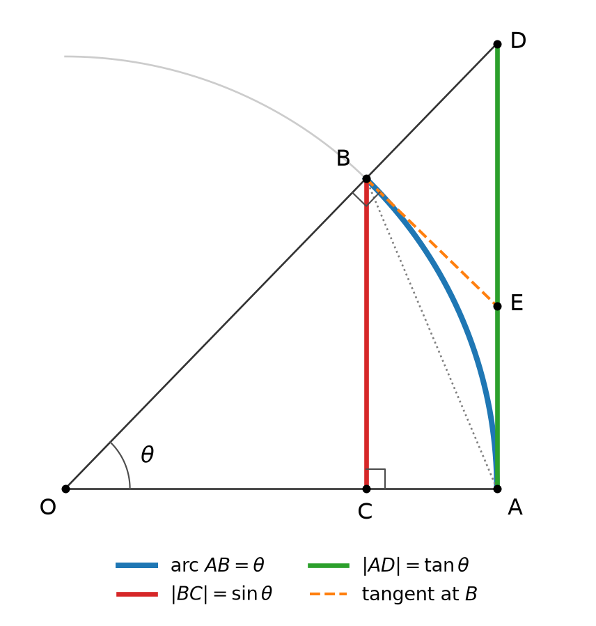
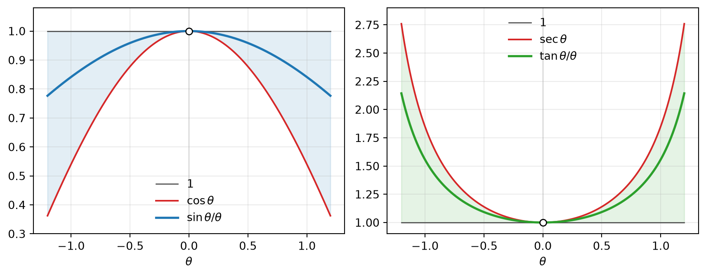

flowchart LR A["Distance on the unit circle"] --> B["Addition formulas"] G["Arc length and the squeeze theorem"] --> L1["sin θ / θ → 1"] L1 --> L2["(cos θ − 1) / θ → 0"] B --> S["(sin x)′ = cos x<br/>(cos x)′ = −sin x"] L1 --> S L2 --> S S --> R["tan, sec, csc, cot<br/>by the quotient rule"]
Differentiation Rule: Derivatives of Trigonometric Functions
One limit, one identity, six derivatives
Every derivative in this note rests on two ingredients: the limit \(\lim_{\theta\to0}\sin\theta/\theta = 1\), which encodes the behavior of sine at the origin, and the addition formula, which transports that behavior to every point. The quotient rule then handles the remaining four functions.
1 Prerequisite: Trigonometric Identities
1.1 Unit-circle definition
For an angle \(\theta\) in radians, let \(P(\theta) = (\cos\theta, \sin\theta)\) be the point where the terminal side of \(\theta\) meets the unit circle. Radian measure means that \(\theta\) is the arc length from \((1,0)\) to \(P(\theta)\). Two facts are immediate:
\[ \cos^2\theta + \sin^2\theta = 1, \qquad \cos(-\theta) = \cos\theta,\quad \sin(-\theta) = -\sin\theta . \]
The first holds because \(P(\theta)\) lies on the unit circle; the second pair because \(P(-\theta)\) is the reflection of \(P(\theta)\) across the \(x\)-axis.
1.2 One identity generates the rest
Compute the distance between \(A = P(x)\) and \(B = P(y)\) in two ways. In coordinates,
\[ |AB|^2 = (\cos x - \cos y)^2 + (\sin x - \sin y)^2 = 2 - 2(\cos x\cos y + \sin x\sin y). \]
Rotating both points by \(-y\) preserves distance and moves them to \(P(x-y)\) and \((1,0)\), so
\[ |AB|^2 = \big(\cos(x-y) - 1\big)^2 + \sin^2(x-y) = 2 - 2\cos(x-y). \]
Comparing the two expressions,
\[ \cos(x-y) = \cos x\cos y + \sin x\sin y . \]
Every identity used below follows from this one.
| Operation | Result |
|---|---|
| Replace \(y\) by \(-y\) | \(\cos(x+y) = \cos x\cos y - \sin x\sin y\) |
| Set \(x = \frac{\pi}{2}\) | \(\cos(\frac{\pi}{2}-\theta) = \sin\theta\), \(\ \sin(\frac{\pi}{2}-\theta) = \cos\theta\) |
| Write \(\sin(x+y) = \cos\big((\frac{\pi}{2}-x)-y\big)\) | \(\sin(x+y) = \sin x\cos y + \cos x\sin y\) |
| Set \(y = x\), then \(x = \frac{\theta}{2}\) | \(1-\cos\theta = 2\sin^2\frac{\theta}{2}\) |
| Subtract the formulas for \(u-v\) from those for \(u+v\) | \(\sin(u+v)-\sin(u-v) = 2\cos u\sin v\), \(\ \cos(u+v)-\cos(u-v) = -2\sin u\sin v\) |
2 The Fundamental Limit
\[ \lim_{\theta\to 0}\frac{\sin\theta}{\theta} = 1 \]
2.1 Geometric setup
Fix \(0<\theta<\frac{\pi}{2}\) and work on the unit circle centered at \(O\) (Figure 1).
- \(A = (1,0)\) and \(B = (\cos\theta, \sin\theta)\), so the arc \(AB\) has length \(\theta\).
- \(C = (\cos\theta, 0)\) is the foot of the perpendicular from \(B\), so \(|BC| = \sin\theta\).
- The tangent line at \(A\) is \(x = 1\). The ray \(OB\) meets it at \(D = (1,\tan\theta)\), so \(|AD| = \tan\theta\).
- The tangent lines at \(A\) and \(B\) meet at \(E = (1,\tan\frac{\theta}{2})\), which lies between \(A\) and \(D\).

2.2 Lower bound: \(\sin\theta < \theta\)
In the right triangle \(BCA\), the leg \(BC\) is shorter than the hypotenuse \(AB\), and the chord \(AB\) is shorter than the arc \(AB\):
\[ \sin\theta = |BC| < |AB| < \operatorname{arc}AB = \theta . \]
2.3 Upper bound: \(\theta < \tan\theta\)
The arc \(AB\) is convex and is enclosed by the tangent path \(A \to E \to B\), so it is shorter than that path. Moreover, triangle \(EBD\) has a right angle at \(B\), because the tangent at \(B\) is perpendicular to the radius \(OB\) and \(D\) lies on line \(OB\). Its hypotenuse is \(ED\), so \(|EB| < |ED|\). Therefore
\[ \theta = \operatorname{arc}AB < |AE| + |EB| < |AE| + |ED| = |AD| = \tan\theta . \]
Area version. Triangle \(OAB\), sector \(OAB\), and triangle \(OAD\) are nested, so
\[ \tfrac12\sin\theta < \tfrac12\theta < \tfrac12\tan\theta , \]
which yields both bounds at once. The sector area is \(\theta/2\) because area is proportional to the central angle: \(\pi\cdot\frac{\theta}{2\pi}\).
2.4 Squeeze
Since \(\cos\theta>0\) on \((0,\frac{\pi}{2})\), the upper bound \(\theta<\sin\theta/\cos\theta\) rearranges to \(\cos\theta < \sin\theta/\theta\). Combined with the lower bound,
\[ \cos\theta < \frac{\sin\theta}{\theta} < 1 \qquad \left(0<\theta<\tfrac{\pi}{2}\right). \]
As \(\theta\to0^+\) both bounds tend to \(1\), so \(\lim_{\theta\to0^+}\sin\theta/\theta = 1\).
2.5 Two-sided limit
\(g(\theta) = \sin\theta/\theta\) is even, since \(g(-\theta) = \frac{-\sin\theta}{-\theta} = g(\theta)\). The left-hand limit therefore equals the right-hand limit, and
\[ \lim_{\theta\to0}\frac{\sin\theta}{\theta} = 1 . \]

2.6 Rigor notes
Continuity of cosine at 0. The squeeze used \(\cos\theta\to1\), which follows from the lower bound alone. For \(0<|\theta|<\frac{\pi}{2}\),
\[ 0 < 1-\cos\theta = 2\sin^2\frac{\theta}{2} < 2\left(\frac{\theta}{2}\right)^2 = \frac{\theta^2}{2}, \]
so \(\cos\theta\to1\). Together with \(|\sin\theta| < |\theta|\), which gives \(\sin\theta\to0\), the addition formula then makes \(\sin\) and \(\cos\) continuous everywhere.
What the geometry assumes. The argument takes for granted that lengths and areas of circular arcs and sectors behave as intuition says: a chord is shorter than its arc, and a convex arc is shorter than an enclosing tangent path. Fully analytic treatments define \(\sin\) and \(\cos\) by power series or by an arc-length integral and prove these facts as theorems.
2.7 Why radians
Let \(S(t) = \sin\!\left(\frac{\pi t}{180}\right)\) be the sine of \(t\) degrees. Then
\[ \lim_{t\to 0}\frac{S(t)}{t} = \frac{\pi}{180}\cdot\lim_{t\to0}\frac{\sin(\pi t/180)}{\pi t/180} = \frac{\pi}{180}. \]
The limit equals \(1\) only because \(\theta\) is an arc length in the proof. Rescaling the angle unit by a factor \(c\) rescales the slope at \(0\) by \(c\), so the radian is the unique unit with slope \(1\), just as \(e\) is the unique base for which the exponential has slope \(1\) at \(0\).
3 Companion Limits
3.1 \(\tan\theta/\theta \to 1\)
Factor out the fundamental limit:
\[ \frac{\tan\theta}{\theta} = \frac{\sin\theta}{\theta}\cdot\frac{1}{\cos\theta} \longrightarrow 1\cdot1 = 1 . \]
Dividing \(\cos\theta < \sin\theta/\theta < 1\) by \(\cos\theta > 0\) also gives a squeeze of its own,
\[ 1 < \frac{\tan\theta}{\theta} < \sec\theta \qquad \left(0<\theta<\tfrac{\pi}{2}\right), \]
and \(\tan\theta/\theta\) is even. Since \(\tan 0 = 0\), this limit is exactly \(\tan'(0)\), the slope of the tangent curve at the origin.
Taken together, \(\sin\theta < \theta < \tan\theta\) and the two limits say that \(|BC|\), arc \(AB\), and \(|AD|\) are strictly ordered, yet indistinguishable to first order as \(\theta\to0\).
3.2 \((\cos\theta-1)/\theta \to 0\)
Conjugate. Multiply numerator and denominator by \(\cos\theta+1\):
\[ \frac{\cos\theta - 1}{\theta} = \frac{\cos^2\theta - 1}{\theta(\cos\theta+1)} = -\frac{\sin\theta}{\theta}\cdot\frac{\sin\theta}{\cos\theta+1} \longrightarrow -1\cdot\frac{0}{2} = 0 . \]
Half-angle. Using \(1 - \cos\theta = 2\sin^2\frac{\theta}{2}\),
\[ \frac{\cos\theta-1}{\theta} = -\sin\frac{\theta}{2}\cdot\frac{\sin(\theta/2)}{\theta/2} \longrightarrow 0, \]
since the first factor tends to \(0\) and the second to \(1\).
Bound. The rigor note above gives \(\left|\frac{\cos\theta-1}{\theta}\right| < \frac{|\theta|}{2}\) directly, which shows not only the limit but the rate.
3.3 Second order: \((1-\cos\theta)/\theta^2 \to 1/2\)
The half-angle form shows more:
\[ \frac{1-\cos\theta}{\theta^2} = \frac{2\sin^2(\theta/2)}{\theta^2} = \frac12\left(\frac{\sin(\theta/2)}{\theta/2}\right)^2 \longrightarrow \frac12 . \]
The first-order limit is \(0\) because \(\cos\) departs from \(1\) only at second order, like \(\theta^2/2\).
3.4 Small-angle summary
| Function | Limit near \(0\) | Bound for \(0<\lvert\theta\rvert<\frac{\pi}{2}\) | Approximation |
|---|---|---|---|
| \(\sin\theta\) | \(\dfrac{\sin\theta}{\theta}\to1\) | \(\lvert\sin\theta\rvert < \lvert\theta\rvert\) | \(\sin\theta\approx\theta\) |
| \(\tan\theta\) | \(\dfrac{\tan\theta}{\theta}\to1\) | \(\lvert\theta\rvert < \lvert\tan\theta\rvert\) | \(\tan\theta\approx\theta\) |
| \(\cos\theta\) | \(\dfrac{1-\cos\theta}{\theta^2}\to\dfrac12\) | \(1-\dfrac{\theta^2}{2}<\cos\theta<1\) | \(\cos\theta\approx1-\dfrac{\theta^2}{2}\) |
4 Derivatives of Sine and Cosine
4.1 Sine
Expand with the addition formula and group the terms:
\[ \begin{aligned} \frac{d}{dx}\sin x &= \lim_{h\to0}\frac{\sin(x+h) - \sin x}{h} = \lim_{h\to0}\frac{\sin x\cos h + \cos x\sin h - \sin x}{h} \\ &= \lim_{h\to0}\left[\sin x\cdot\frac{\cos h - 1}{h} + \cos x\cdot\frac{\sin h}{h}\right] \\ &= \sin x\cdot 0 + \cos x\cdot 1 = \cos x . \end{aligned} \]
Splitting the limit of the sum is legitimate because both limits exist, and \(\sin x\), \(\cos x\) are constants with respect to \(h\).
4.2 Sine by sum-to-product
With \(u = x + \frac{h}{2}\) and \(v = \frac{h}{2}\) in \(\sin(u+v) - \sin(u-v) = 2\cos u\sin v\),
\[ \frac{\sin(x+h) - \sin x}{h} = \cos\!\left(x + \frac{h}{2}\right)\cdot\frac{\sin(h/2)}{h/2} \longrightarrow \cos x\cdot 1 = \cos x . \]
This route uses only the fundamental limit and the continuity of \(\cos\). It also has a clean reading: the slope of the chord over \([x, x+h]\) equals \(\cos\) evaluated at the midpoint, shrunk by the factor \(\frac{\sin(h/2)}{h/2}\), which tends to \(1\).
4.3 Cosine
The same steps with \(\cos(x+h) = \cos x\cos h - \sin x\sin h\) give
\[ \frac{\cos(x+h)-\cos x}{h} = \cos x\cdot\frac{\cos h-1}{h} - \sin x\cdot\frac{\sin h}{h} \longrightarrow \cos x\cdot 0 - \sin x\cdot 1 = -\sin x , \]
and in sum-to-product form, \(\dfrac{\cos(x+h)-\cos x}{h} = -\sin\!\left(x+\dfrac{h}{2}\right)\dfrac{\sin(h/2)}{h/2} \to -\sin x\).
4.4 Structural view: slope at 0, transported
The two fundamental limits are precisely the derivatives at the origin:
\[ \sin'(0) = \lim_{h\to0}\frac{\sin h}{h} = 1, \qquad \cos'(0) = \lim_{h\to0}\frac{\cos h - 1}{h} = 0 . \]
The addition formula carries this local information to every \(x\). Exponentials work the same way: \(a^{x+h} = a^x a^h\) turns the slope at \(0\) into \((a^x)' = f'(0)\,a^x\). The difference is that the addition formulas couple \(\sin\) and \(\cos\), so the scalar becomes a matrix:
\[ \begin{pmatrix}\cos(x+h)\\ \sin(x+h)\end{pmatrix} = \underbrace{\begin{pmatrix}\cos h & -\sin h\\ \sin h & \cos h\end{pmatrix}}_{R(h)} \begin{pmatrix}\cos x\\ \sin x\end{pmatrix}, \]
where \(R(h)\) is the rotation by \(h\). Subtracting the vector at \(x\) and dividing by \(h\),
\[ \frac{d}{dx}\begin{pmatrix}\cos x\\ \sin x\end{pmatrix} = \lim_{h\to 0}\frac{R(h) - I}{h}\begin{pmatrix}\cos x\\ \sin x\end{pmatrix} = \underbrace{\begin{pmatrix}0 & -1\\ 1 & 0\end{pmatrix}}_{J} \begin{pmatrix}\cos x\\ \sin x\end{pmatrix} = \begin{pmatrix}-\sin x\\ \cos x\end{pmatrix}. \]
The entries of \(\frac{R(h)-I}{h}\) are exactly the two fundamental limits, and the scalar \(f'(0)\) of the exponential case becomes \(J\), the rotation by \(\frac{\pi}{2}\). Two readings follow.
- Geometry. The velocity of \(P(x) = (\cos x, \sin x)\) is \(P(x)\) rotated by \(+\frac{\pi}{2}\): tangent to the circle, counterclockwise, with unit speed. Unit speed is the radian convention once more.
- Phase. Since \(-\sin x = \cos(x + \frac{\pi}{2})\) and \(\cos x = \sin(x+\frac{\pi}{2})\), differentiation advances a sinusoid’s phase by \(\frac{\pi}{2}\). For constant \(\omega\neq0\), substituting \(k = \omega h\) in the difference quotient gives \(\frac{d}{dt}\cos\omega t = -\omega\sin\omega t = \omega\cos(\omega t + \frac{\pi}{2})\): the amplitude is scaled by \(\omega\) and the phase advanced by \(\frac{\pi}{2}\). Because \(J^2 = -I\), \(J\) behaves like the imaginary unit, and this is the real-variable form of the phasor rule “differentiation is multiplication by \(j\omega\)”.
5 The Remaining Four Functions
5.1 Tangent
By the quotient rule \((f/g)' = (f'g - fg')/g^2\),
\[ \frac{d}{dx}\tan x = \frac{\cos x\cdot\cos x - \sin x\cdot(-\sin x)}{\cos^2 x} = \frac{\cos^2 x + \sin^2 x}{\cos^2 x} = \frac{1}{\cos^2 x} = \sec^2 x , \]
valid wherever \(\cos x\neq 0\), i.e., \(x\neq\frac{\pi}{2}+n\pi\). Dividing \(\cos^2x + \sin^2x = 1\) by \(\cos^2 x\) gives \(\sec^2x = 1+\tan^2x\), so
\[ \frac{d}{dx}\tan x = 1 + \tan^2 x , \]
a derivative expressed through the function itself, much like \((e^x)' = e^x\). At \(x = 0\) it gives \(\tan'(0) = 1\), recovering \(\tan\theta/\theta\to1\).
5.2 Secant, cosecant, cotangent
The reciprocal rule \((1/g)' = -g'/g^2\) gives
\[ \frac{d}{dx}\sec x = \frac{\sin x}{\cos^2 x} = \sec x\tan x, \qquad \frac{d}{dx}\csc x = -\frac{\cos x}{\sin^2 x} = -\csc x\cot x, \]
and the quotient rule gives
\[ \frac{d}{dx}\cot x = \frac{(-\sin x)\sin x - \cos x\cos x}{\sin^2 x} = -\frac{1}{\sin^2 x} = -\csc^2 x . \]
\(\sec\) and \(\tan\) require \(x\neq\frac{\pi}{2}+n\pi\); \(\csc\) and \(\cot\) require \(x\neq n\pi\).
5.3 Why the minus signs go with the cofunctions
Each cofunction is its partner composed with the reflection \(x\mapsto\frac{\pi}{2}-x\): \(\cos x = \sin(\frac{\pi}{2}-x)\), \(\cot x = \tan(\frac{\pi}{2}-x)\), \(\csc x = \sec(\frac{\pi}{2}-x)\). For \(g(x) = f(\frac{\pi}{2}-x)\), put \(u = \frac{\pi}{2}-x\) and \(k=-h\):
\[ \frac{g(x+h)-g(x)}{h} = \frac{f(u+k) - f(u)}{-k} \longrightarrow -f'(u) = -f'\!\left(\tfrac{\pi}{2}-x\right). \]
The reflection contributes exactly one factor of \(-1\), and the cofunction identities convert the rest:
| \(f\) | Cofunction \(g\) | \(g'(x) = -f'(\frac{\pi}{2}-x)\) |
|---|---|---|
| \(\sin\) | \(\cos\) | \(-\cos(\frac{\pi}{2}-x) = -\sin x\) |
| \(\tan\) | \(\cot\) | \(-\sec^2(\frac{\pi}{2}-x) = -\csc^2 x\) |
| \(\sec\) | \(\csc\) | \(-\sec(\frac{\pi}{2}-x)\tan(\frac{\pi}{2}-x) = -\csc x\cot x\) |
Half of the table follows from the other half: only \(\sin\), \(\tan\), and \(\sec\) need independent derivations.
5.4 Summary
| \(f(x)\) | \(f'(x)\) | Domain | Parity of \(f \to f'\) |
|---|---|---|---|
| \(\sin x\) | \(\cos x\) | all \(x\) | odd \(\to\) even |
| \(\cos x\) | \(-\sin x\) | all \(x\) | even \(\to\) odd |
| \(\tan x\) | \(\sec^2 x\) | \(x\neq\frac{\pi}{2}+n\pi\) | odd \(\to\) even |
| \(\sec x\) | \(\sec x\tan x\) | \(x\neq\frac{\pi}{2}+n\pi\) | even \(\to\) odd |
| \(\csc x\) | \(-\csc x\cot x\) | \(x\neq n\pi\) | odd \(\to\) even |
| \(\cot x\) | \(-\csc^2 x\) | \(x\neq n\pi\) | odd \(\to\) even |
All six formulas assume \(x\) is measured in radians.
6 Verification Toolkit
| Check | What it catches | Example |
|---|---|---|
| Parity | Sign errors, stray factors | \(f\) odd \(\Rightarrow\) \(f'\) even, and vice versa |
| Value at \(0\) | Wrong constant | \(\sin'(0) = \tan'(0) = 1\), \(\ \cos'(0) = \sec'(0) = 0\) |
| Monotonicity | Wrong sign | \(\cos\) decreases on \((0,\pi)\), so \(\cos' = -\sin < 0\) there |
| Periodicity | Spurious terms | \(f\) has period \(T\) \(\Rightarrow\) \(f'\) has period \(T\), so a term like \(x\cos x\) cannot appear |
| Identity consistency | A mismatched pair of formulas | \(\frac{d}{dx}(\sin^2x+\cos^2x) = 2\sin x\cos x - 2\cos x\sin x = 0\) |
| Difference quotient | Wrong magnitude | \(\frac{\tan 0.01 - \tan 0}{0.01}\approx 1.00003 \approx \sec^2 0\) |
7 Common Pitfalls
- Degrees. Every formula above assumes radians. In degrees each derivative picks up a factor \(\pi/180\).
- Circular shortcuts. When \(\sin\) is defined geometrically, computing \(\lim\sin\theta/\theta\) by L’Hôpital’s rule or by the series \(\theta - \theta^3/6 + \cdots\) is circular: both use \(\sin'(0) = 1\), and \(\sin'(0)\) is this limit. The squeeze argument is what breaks the circle.
- Splitting limits. \(\lim(A+B) = \lim A + \lim B\) requires both limits to exist. The sine derivation works because \((\cos h - 1)/h\) and \(\sin h/h\) each converge.
- Domains. \(\sec^2 x > 0\) does not make \(\tan\) increasing on \(\mathbb{R}\): \(\frac{\pi}{4}<\frac{3\pi}{4}\), yet \(\tan\frac{\pi}{4} = 1 > -1 = \tan\frac{3\pi}{4}\). A positive derivative implies increase only on an interval inside the domain.
- Notation. \(\sin^2x = (\sin x)^2\) but \(\sin x^2 = \sin(x^2)\); likewise \(\sec^2 x\) is the square of \(\sec x\).